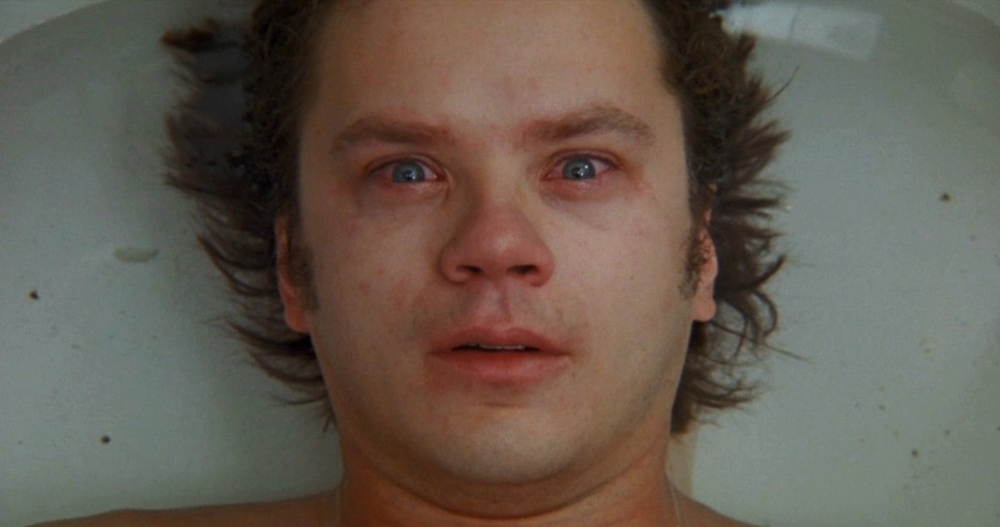
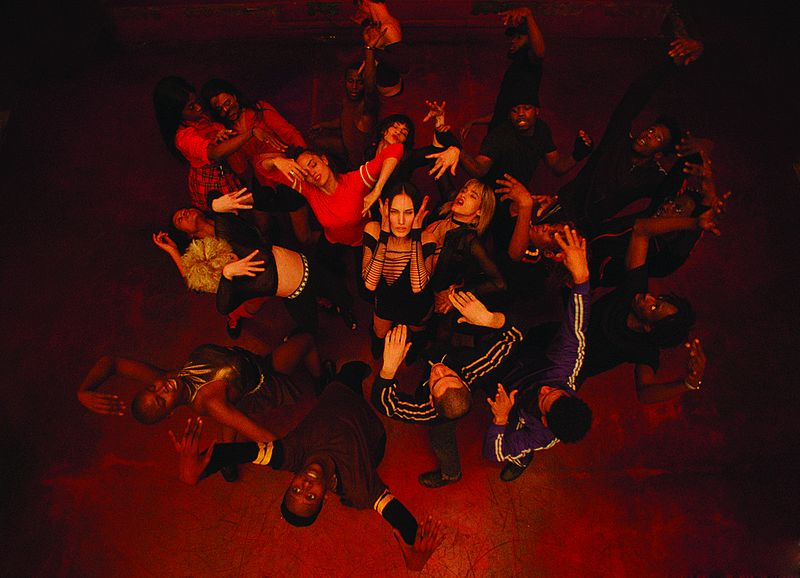

2035 год... Чудовищный, неизлечимый вирус уничтожил пять миллиардов человек, то есть 99% населения Земли.
Оставшиеся в живых люди вынуждены обитать под землей. Уголовник Джеймс Коул добровольно отправляется в опасное путешествие на машине времени.
Он должен попасть в прошлое, чтобы помочь ученым найти источник возникновения этого ужасного вируса и раскрыть загадку таинственных «Двенадцати обезьян»...

Лестница Иакова
Иаков Сингер возвращается в Нью-Йорк после ранения во Вьетнаме. Терзаемый воспоминаниями о сыне и ужасах войны Иаков постепенно теряет контроль над реальностью.
Оказывается, что только его друг Луис является единственным человеком, на которого Иаков может рассчитывать.
Дело принимает мрачный оборот, когда он узнает, что его бывшие сослуживцы страдают от таких же галлюцинаций.

Экстаз
Выпускники академии современного танца решают устроить прощальную вечеринку.
Однако таинственным образом под нарастающий ритм музыки почти всех охватывает нездоровая эйфория, которой невозможно сопротивляться.
Оказывается, кто-то подмешал в сангрию психоделики, и теперь участники этой безумной вечеринки постепенно начинают слетать с катушек.
Солнцестояние
День летнего солнцестояния – древний праздник, который во всех культурах окутан мистическим ореолом.
В отрезанном от цивилизованного мира шведском поселении в этот день проводятся уникальные обряды с многовековой традицией.
Именно туда отправляется группа молодых американских студентов-антропологов, прихватив с собой девушку одного из них.
Однако вскоре после прибытия друзья выясняют, что местные обряды далеко не безобидны